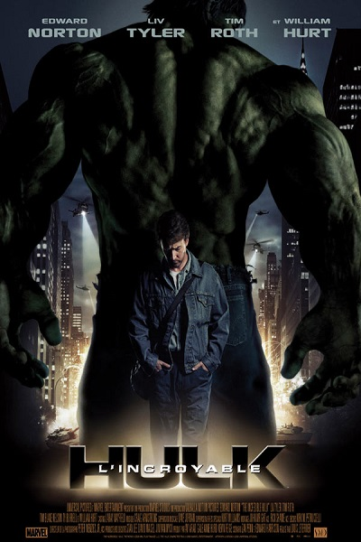

 Bruce Banner est un scientifique , lors d'une experience qui tourne mal il est exposé a des radiations gammas qui vont crée Hulk. Une identité a part entière vivant dans Bruce Banner.Il cherches désespérement un remède afin de ce débarasser du monstre qui sommeille en lui .Cependant le Général Thunderbolt Ross et son bras droit Blonsky cherhce a tout prit a s'accaparer le pouvoir qui sommeille en Bruce à des fins militaire , après de nombreuse éxperience Blonsky ce voit transformé en monstre incontrolable.Bruce est forcé de se battre en réveillant Hulk afin de défendre New York contre L'Abomination . Le film présenté est celui de 2008 par le réalisateur Louis Terrier , et Edward Norton dans le rôle de Bruce Banner.Il s'agit du dernier film Hulk sortis a ce jour.
Scott Land , un cambrioleur de talents , il ce fait recruter par le Docteur Hank Pym afin de commettre un cambriolage qui sauvera le monde. Touce ceci a l'aide du costume de Ant-Man qui permet de rétrecir ou d'aggrandir sa taille et aussi de "contrôler" les fourmis. Le film a été réalisé par Peyton Reed , sortis en 2015 , produit par Marvels Studios. Il fait partis de L'univers Cinématographique Marvels dont il clos la phase 2.
Le Docteur Stephen Strange est un chirurgien réputé de talent. Malheuresement pour lui il es victime d'un accident de voiture qu'il l'empechera de pratiquer. S'ensuit alors des recherches de sa part afin de récupérer l'usage de ses main a leur plein potentiel. Il devrais mettre sont ego de côté afin d'apprendre les secrets d'un monde parallele.
Peter Parker , après ses premier pas avec les avengers dans Captain America:Civil War , tente de prendre ces marque avec sont identité de Spider- Man. Il sera d'ailleur aidé par Tony Stark ( Iron Man ) . L'apparition d'un nouvel ennemi ,le Vautour, va le mettre a l'épreuve , il devra alors defendre tout ce qui compte pour lui .